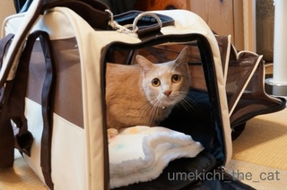
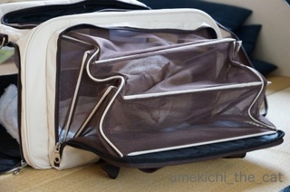
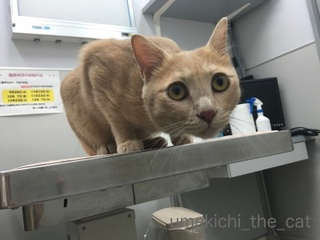
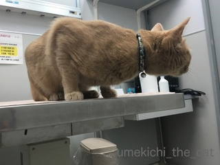
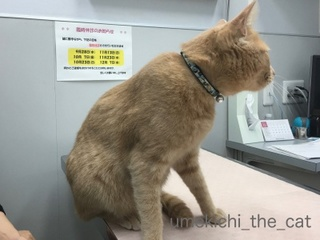
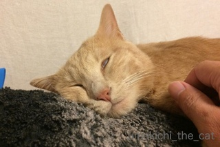
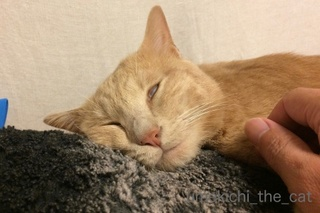

2016 予防接種 [梅吉]
今日は梅吉さんの年に一度の予防接種でした。
朝キャリーを押入れから出すと・・・・

早速やってきてキャリー改めをする梅吉さん。

そんなことはありません。
キャリー＝100%病院なのにイヤがりもせず入る、漢、梅吉。
移動中は余裕の表情。
道ゆく人を眺めたりしています。
が、病院に一歩入ると、フーッ！シャーッ！！うぉーーーん！！！

診察台の上にて。もう余裕なんてありません。

診察室の内扉（先生が入ってくる扉）をガン見。

扉が開くとあとずさる梅吉さん。笑。
この後フーッ！シャーッ！！うぉーーーん！！！と叫びまくって
無事予防接種を終えました。
おつかれさん。
先生もねw
連日の変顔〜涼しくて寝やすいから〜 [梅吉]
不思議な変貌 [梅吉]
〜本日簡単更新です〜
甘えている時、くつろいでいる時、梅吉さんは変顔になります。

これはおとーさんのぼよんぼよんベッドで甘えてくつろいでいる至福のひと時。
ヒドイ顔ですよ。
でもこの変顔が飼い主にとっても至福のひと時。
 ↑ガブッと一押し↑
↑ガブッと一押し↑
甘えている時、くつろいでいる時、梅吉さんは変顔になります。

これはおとーさんのぼよんぼよんベッドで甘えてくつろいでいる至福のひと時。
ヒドイ顔ですよ。
でもこの変顔が飼い主にとっても至福のひと時。
蒸し暑い休日 [梅吉]

おうちのお手入れ [梅吉]
梅吉健康法 [梅吉]
曇り空の涼しい日 [梅吉]
休日は朝稽古 [梅吉]


カフェオレ色の梅吉

梅吉 2023年8月10日 永眠


梅吉と出会った譲渡会

犬猫の理由なき殺処分ゼロ
妄想広告
UMEKICHI 光

爆発的に早い！
時々攻撃的！
Thanks to Mr.Boss365
爆発的に早い！
時々攻撃的！
Thanks to Mr.Boss365